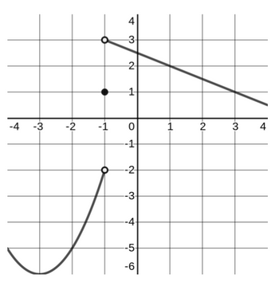

Problems
Problems 1 and 2 refer to the function
Problem 1
Find the vertical asymptote, if any, for
\[ f(x)=\frac{7x+2}{3-5x}. \]A. \(x=-\dfrac{7}{2}\)
B. \(x=-\dfrac{2}{7}\)
C. \(x=\dfrac{3}{5}\)
D. \(x=0\)
E. There is no vertical asymptote.
Hint 1
Vertical asymptotes happen where the denominator is zero (and the numerator is not).
Hint 2
Solve
for \(x\), then check which choice matches.
Problem 2
Find the \(y\)-intercept, if any, for \(f\).
A. \((0,\dfrac{2}{3})\)
B. \((0,\dfrac{3}{2})\)
C. \((0,-\dfrac{2}{3})\)
D. \((0,-\dfrac{3}{2})\)
E. There is no \(y\)-intercept.
Hint 1
The \(y\)-intercept occurs when
Hint 2
Compute
and match the ordered pair.
A company has a production cost function
and a revenue function
when \(x\) units are sold.
Problem 3
Find the profit function \(P(x)\).
A. \(P(x)=344x+5220\)
B. \(P(x)=180x-5220\)
C. \(P(x)=82x-5220\)
D. \(P(x)=262x-5220\)
E. \(P(x)=262x+5220\)
Hint 1
Profit = Revenue \(-\) Cost.
Hint 2
Compute
and simplify.
Problem 4
Determine the break-even quantity.
The break-even quantity is:
A. less than 27 units
B. between 27 and 31 units
C. between 31 and 35 units
D. between 35 and 39 units
E. more than 39 units
Hint 1
Break-even means the profit is zero:
Hint 2
Use the profit function from Problem 3, solve
then see which interval the solution lies in.
The graph of a function \(f\) is shown below. Problems 5 and 6 refer to this graph.

Problem 5
Find \(\displaystyle \lim_{x\to -1^+} f(x)\), assuming the limit exists.
A. \(\displaystyle \lim_{x\to -1^+} f(x) = 1\)
B. \(\displaystyle \lim_{x\to -1^+} f(x) = 3\)
C. \(\displaystyle \lim_{x\to -1^+} f(x) = -2\)
D. \(\displaystyle \lim_{x\to -1^+} f(x)\) does not exist
Hint 1
Look only at \(x\)-values slightly greater than \(-1\) (to the right of \(-1\)).
Hint 2
Compare what happens as \(x\to -1^-\) and \(x\to -1^+\).
If left- and right-hand limits are different, the (two-sided) limit does not exist.
Problem 6
Find the instantaneous rate of change of \(f(x)\) at \(x=3\).
The instantaneous rate of change is:
A. \(-\dfrac{1}{2}\)
B. \(-2\)
C. \(1\)
D. \(-1\)
Hint 1
Instantaneous rate of change at a point is the slope of the tangent line there.
Hint 2
Use two points on the tangent line shown, for example \((1,2)\) and \((3,1)\), and compute
Problem 7
Find the domain of the function
\[ g(x)=\frac{3x+5}{x^2-4x-12}. \]A. \((-\infty,-6)\cup(-6,2)\cup(2,\infty)\)
B. \(\left(-\infty,-\dfrac{5}{3}\right)\cup\left(-\dfrac{5}{3},\infty\right)\)
C. \((-\infty,-2)\cup(-2,6)\cup(6,\infty)\)
D. \(\left(-\infty,-\dfrac{5}{12}\right)\cup\left(-\dfrac{5}{12},\infty\right)\)
E. \((-\infty,\infty)\)
Hint 1
The domain excludes values that make the denominator zero.
Hint 2
Factor the quadratic
and find the values of \(x\) to exclude.
Problem 8
Given \(f(x)=x+5\) and \(g(x)=x^2-3x+1\), find and simplify \(g(f(x))\).
A. \(x^2-3x+26\)
B. \(x^2+7x+26\)
C. \((x+5)(x^2-3x+1)\)
D. \(x^2+7x+11\)
E. \(x^2-3x+11\)
Hint 1
Composition \(g(f(x))\) means plug \(x+5\) into \(g\) wherever you see \(x\).
Hint 2
Compute
and simplify.
Problem 9
A charter flight charges a fare of $350 per person plus $4 per person for each unsold seat on the plane.
The plane holds 200 passengers. Let \(x\) represent the number of unsold seats.
Find the revenue function \(R(x)\).
The revenue function is:
A. \(R(x)=(200+x)(350-4x)\)
B. \(R(x)=(200-4x)(350+x)\)
C. \(R(x)=(200+4x)(350-x)\)
D. \(R(x)=(200-x)(1400x)\)
E. \(R(x)=(200-x)(350+4x)\)
Hint 1
If \(x\) seats are unsold, how many seats are sold?
Hint 2
Ticket price = base $350 plus $4 times number of unsold seats:
Revenue = (number sold)\(\times\)(ticket price).
Problem 10
The demand function for a product is
dollars per unit when \(x\) units are consumed.
How many units are consumed when the price per unit is $400?
The number of units consumed is:
A. less than 500
B. between 500 and 650
C. between 650 and 800
D. between 800 and 950
E. more than 950
Hint 1
Set the demand price equal to 400:
Hint 2
Solve
and see which interval contains the solution.
Problem 11
Let \(f(x)\) be a function where \(f(2)=8\) and \(f'(2)=-4\).
Find the equation of the tangent line to the graph of \(f(x)\) at \(x=2\).
A. \(y=8(x+2)-4\)
B. \(y=-4(x-2)+8\)
C. \(y=8(x-2)-4\)
D. \(y=-4(x+2)+8\)
E. \(y=8(x+2)+4\)
Hint 1
The tangent line at \(x=2\) has slope
and passes through the point
Hint 2
Use point–slope form
with \(m=-4\), \(x_1=2\), \(y_1=8\), then simplify.
For Problems 12–17, work must be shown and your final answer must be boxed on paper to receive full credit.
Problem 12
Suppose it costs a company $1286 to produce 40 pairs of shoes and $2159 to produce 85 pairs of shoes.
Determine the linear cost function \(C(x)\), where \(x\) is the number of pairs of shoes produced.
Hint 1
Think of the cost function as a line
going through two points.
Hint 2
Use the points
to find the slope \(m\), then solve for \(b\).
Problem 13
Let
Find the following limits. If a limit does not exist, write DNE.
a. \(\displaystyle \lim_{x\to\infty} f(x)\)
b. \(\displaystyle \lim_{x\to 1} f(x)\)
c. \(\displaystyle \lim_{x\to 2} f(x)\)
Hint 1
Factor the numerator and denominator. See if anything cancels.
Hint 2
For (a), compare leading terms as \(x\to\infty\).
For (b) and (c), use the simplified form after canceling common factors (when allowed).
Problem 14
A company determines that its profit, in dollars, is modeled by
where \(x\) is the quantity of hats produced and sold.
Find the average rate of change of profit as the number of hats produced and sold ranges from 7 to 10.
Give appropriate units.
Hint 1
Average rate of change from \(x=a\) to \(x=b\) is
Hint 2
Compute \(P(7)\) and \(P(10)\), subtract, then divide by \(10-7\).
Problem 15
Let
\[ g(x)= \begin{cases} x^2+9, & x<2,\\[4pt] 4x+7, & x\ge 2. \end{cases} \]a. Evaluate \(g(5)\).
b. Solve for \(x\) when \(g(x)=19\).
Hint 1
For each part, decide which piece of the function applies.
Hint 2
For (b), solve both equations
\[ 4x+7=19 \quad (x\ge 2), \]
and keep only solutions that fit the correct domain.
Problem 16
A company selling rugs has a supply function
where \(x\) is the quantity of rugs supplied, and a demand function
where \(x\) is the quantity of rugs demanded. Assume \(S(x)\) and \(D(x)\) represent price in dollars per rug.
Sketch an appropriate graph of \(S(x)\) and \(D(x)\) on the same set of axes.
Identify the equilibrium point on your graph. Below your graph, identify the equilibrium quantity and equilibrium price.
Hint 1
At equilibrium, supply price equals demand price:
Hint 2
Solve
for the quantity, then plug back into either \(S\) or \(D\) for the price.
Problem 17
The revenue function for a product (in dollars) when \(x\) desks are produced and sold is
a. Determine the number of desks that must be sold in order for revenue to be a maximum.
b. Find the instantaneous rate of change of revenue when 300 desks are produced and sold.
Interpret your answer using a complete sentence.
Hint 1
For (a), use the vertex formula for a parabola
where the maximum occurs at
Hint 2
For (b), compute \(R'(x)\) and evaluate at \(x=300\).
Remember that \(R'(300)\) is the rate of change of revenue per additional desk at that production level.
Answers and Solutions {: #answers }
Multiple-choice answers (quick key)
- C
- A
- B
- B
- D
- A
- C
- D
- E
- C
- B
Problem 1
Solve
for \(x\):
\[ 3-5x=0 \quad\Rightarrow\quad -5x=-3 \quad\Rightarrow\quad x=\frac{3}{5}. \]The numerator is nonzero at \(x=\frac{3}{5}\), so this value gives a vertical asymptote.
Answer: C
Problem 2
Evaluate
\[ f(0)=\frac{7\cdot 0+2}{3-5\cdot 0} =\frac{2}{3}. \]Thus the \(y\)-intercept is
\[ (0,\tfrac{2}{3}). \]Answer: A
Problem 3
Profit is revenue minus cost:
\[ \begin{aligned} P(x) &=R(x)-C(x) \\ &=262x-(82x+5220) \\ &=262x-82x-5220 \\ &=180x-5220. \end{aligned} \]Answer: B
Problem 4
Set profit equal to zero:
\[ \begin{aligned} 0 &= 180x - 5220 \\ 180x &= 5220 \\ x &= \frac{5220}{180} \\ &= 29. \end{aligned} \]So the break-even quantity is \(x=29\), which is between 27 and 31.
Answer: B
Problem 5
From the graph:
- As \(x\to -1^-\), the function values approach \(-2\).
- As \(x\to -1^+\), the function values approach \(3\).
So
\[ \lim_{x\to -1^-} f(x) = -2, \quad \lim_{x\to -1^+} f(x) = 3. \]Because the left-hand and right-hand limits are different, the two-sided limit
\[ \lim_{x\to -1} f(x) \]does not exist.
Answer: D
Problem 6
From the graph, a tangent line at \(x=3\) passes through the points \((1,2)\) and \((3,1)\).
The slope is
So the instantaneous rate of change at \(x=3\) is \(-\tfrac{1}{2}\).
Answer: A
Problem 7
Factor the denominator:
\[ x^2-4x-12 = (x-6)(x+2). \]The function is undefined when the denominator is zero, so
\[ x\neq -2,\quad x\neq 6. \]Thus the domain is
\[ (-\infty,-2)\cup(-2,6)\cup(6,\infty). \]Answer: C
Problem 8
Compute the composition:
\[ \begin{aligned} g(f(x)) &= (x+5)^2 - 3(x+5) + 1 \\ &= (x^2+10x+25) - 3x - 15 + 1 \\ &= x^2 + 10x + 25 - 3x - 15 + 1 \\ &= x^2 + 7x + 11. \end{aligned} \]Answer: D
Problem 9
If \(x\) seats are unsold, then
\[ \text{seats sold} = 200 - x. \]The ticket price is
\[ \text{price} = 350 + 4x. \]So the revenue is
\[ R(x) = (200-x)(350+4x). \]Answer: E
Problem 10
Set \(p(x)=400\):
\[ \begin{aligned} 400 &= 700 - 0.4x \\ 0.4x &= 300 \\ x &= \frac{300}{0.4} \\ &= 750. \end{aligned} \]Thus 750 units are consumed.
This lies between 650 and 800.
Answer: C
Problem 11
The slope of the tangent line is
\[ m = f'(2) = -4, \]and the point of tangency is
\[ (2,f(2)) = (2,8). \]Use point–slope form:
\[ \begin{aligned} y - 8 &= -4(x-2). \end{aligned} \]This is equivalent to
\[ y = -4(x-2)+8. \]Answer: B
Problem 12
Treat the cost function as a line \(C(x)=mx+b\) through the points
\((40,1286)\) and \((85,2159)\).
Compute the slope:
\[ \begin{aligned} m &= \frac{2159-1286}{85-40} \\ &= \frac{873}{45} \\ &= \frac{97}{5}. \end{aligned} \]Now use the point \((40,1286)\) to solve for \(b\):
\[ \begin{aligned} 1286 &= \frac{97}{5}\cdot 40 + b \\ 1286 &= 776 + b \\ b &= 1286 - 776 \\ &= 510. \end{aligned} \]So the linear cost function is
\[ C(x) = \frac{97}{5}x + 510 \](or \(C(x)=19.4x+510\)).
Problem 13
Factor:
\[ x^2-4=(x-2)(x+2), \]\[ x^2+2x-8=(x+4)(x-2). \]
For \(x\neq 2\), the function simplifies to
\[ f(x) = \frac{x+2}{x+4}. \](a) As \(x\to\infty\), the leading terms dominate:
\[ \lim_{x\to\infty} f(x) = \lim_{x\to\infty} \frac{x+2}{x+4} = 1. \](b) At \(x=1\), the denominator is nonzero, so
\[ \begin{aligned} \lim_{x\to 1} f(x) &= f(1) \\ &= \frac{1^2 - 4}{1^2 + 2\cdot 1 - 8} \\ &= \frac{-3}{-5} \\ &= \frac{3}{5}. \end{aligned} \](c) As \(x\to 2\), use the simplified form:
\[ \begin{aligned} \lim_{x\to 2} f(x) &= \lim_{x\to 2} \frac{x+2}{x+4} \\ &= \frac{2+2}{2+4} \\ &= \frac{4}{6} \\ &= \frac{2}{3}. \end{aligned} \]Problem 14
Compute
\[ \begin{aligned} P(10) &= -2(10)^2 + 51(10) - 100 \\ &= -200 + 510 - 100 \\ &= 210, \\ P(7) &= -2(7)^2 + 51(7) - 100 \\ &= -98 + 357 - 100 \\ &= 159. \end{aligned} \]Average rate of change from \(x=7\) to \(x=10\):
\[ \begin{aligned} \frac{P(10)-P(7)}{10-7} &= \frac{210-159}{3} \\ &= \frac{51}{3} \\ &= 17. \end{aligned} \]So the average rate of change of profit is $17 per hat over this interval.
Problem 15
The function is
\[ g(x) = \begin{cases} x^2+9, & x<2,\\[4pt] 4x+7, & x\ge 2. \end{cases} \](a) Since \(5\ge 2\), use the linear piece:
\[ \begin{aligned} g(5) &= 4\cdot 5 + 7 \\ &= 20 + 7 \\ &= 27. \end{aligned} \](b) Solve \(g(x)=19\) in both pieces.
For \(x<2\):
\[ \begin{aligned} x^2+9 &= 19 \\ x^2 &= 10 \\ x &= \pm \sqrt{10}. \end{aligned} \]Only \(x=-\sqrt{10}\) satisfies \(x<2\).
For \(x\ge 2\):
\[ \begin{aligned} 4x+7 &= 19 \\ 4x &= 12 \\ x &= 3, \end{aligned} \]which satisfies \(x\ge 2\).
So the solutions are
\[ x = -\sqrt{10} \quad\text{and}\quad x = 3. \]Problem 16
Set supply equal to demand:
\[ \begin{aligned} 0.4x + 700 &= -0.2x + 2500 \\ 0.4x + 0.2x &= 2500 - 700 \\ 0.6x &= 1800 \\ x &= \frac{1800}{0.6} \\ &= 3000. \end{aligned} \]So the equilibrium quantity is
\[ x = 3000 \text{ rugs}. \]Find the corresponding price:
\[ \begin{aligned} S(3000) &= 0.4(3000) + 700 \\ &= 1200 + 700 \\ &= 1900. \end{aligned} \]Thus the equilibrium point is
\[ (3000, 1900), \]meaning 3000 rugs at $1900 per rug.
Problem 17
The revenue function is
\[ R(x) = -0.8x^2 + 700x. \](a) Maximum revenue
This is a downward-opening parabola with
\[ a=-0.8,\quad b=700. \]The vertex (maximum) occurs at
\[ \begin{aligned} x &= -\frac{b}{2a} \\ &= -\frac{700}{2(-0.8)} \\ &= \frac{700}{1.6} \\ &= 437.5. \end{aligned} \]So revenue is maximized when about 438 desks are produced and sold
(mathematically at \(x=437.5\)).
(b) Instantaneous rate of change at \(x=300\)
Differentiate:
\[ R'(x) = -1.6x + 700. \]Evaluate at \(x=300\):
\[ \begin{aligned} R'(300) &= -1.6(300) + 700 \\ &= -480 + 700 \\ &= 220. \end{aligned} \]Interpretation: when 300 desks are being produced and sold,
revenue is increasing at about $220 per additional desk.